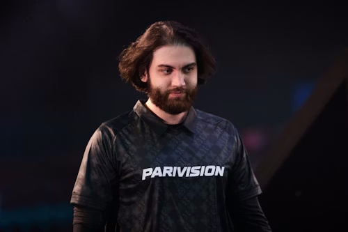

Jame

Jame — российский профессиональный игрок в Counter-Strike 2. Его настоящее имя — Джами Али. Он известен как опытный капитан и снайпер.
Сейчас Jame выступает за PARIVISION. Его можно выделить как одного из самых узнаваемых российских игроков, связанных с тактическим стилем игры.